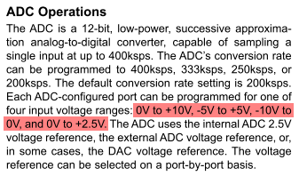

Any opinions about the MAX11300? It could do a whole lot of things in one package, 20 I/O's that can be configured to be cv-in, cv-out, gate/trigger in, gate/trigger out...
But the resolution is not very high, at 1V/oct and 12bit, there are only 33 steps per semitone. But many Midi-CV converters only have 12bit DAC's, but I guess with a lower output range than 10V.
Now CV for oscillators is perhaps the most demanding application in terms of precision and stability, many other applications are far more tolerant.
MAX11300 for CV-IN and CV-OUT
johannes
#1
[Need Help with SPI] Euxoloti for axoloti (Eurorack Module)
Output to Oscillosope options
[Need Help with SPI] Euxoloti for axoloti (Eurorack Module)
Anyone planning to make and sell an enclosure?
My comment was mostly referring to the output buffer ("in the loop" compensated vs series resistor).
As for the DAC, I hadn't even heard of the MAX11300. I had a quick look and the DAC specs look ok enough to me (+/- 0.5 LSB DNL, +/-0.5 LSB INL), somewhat like the popular MCP4922; or even a bit better. It's true, of course, lots of MIDI-CV stuff would seem to use 12 bit converters. At 13,96 euro ex VAT, they're not exactly cheap though. Lots of IO, to be sure. As they're TQFN/TQFP only, I'd say it mostly depends on whether this would be geared towards "DIY-for-all" or a ready-made expander.
johannes
#3
Interesting about the MAX11300 is that it seems to be capable to interface with eurorack with no external buffering or level shifting at all. Jacks could then soft-switch between cv-in, cv-out, gate-in, gate-out...
Not cheap, but if the alternative 'd involve multiple separate adc and dac's, level shifting/buffering opamps, it looks quite attractive. And, yes, I tend to look from a production perspective, where thru-hole is avoided wherever possible.
True, I hadn't even noticed. Looks like it could be run off a local +/- 9V or so supply and that would be that, mostly...
As an aside, I was looking at the Euxoloti schematic and was wondering about the audio input buffers. I suppose I'm missing something, but it looks as if they're biased to 1.9V (= 1.65*(3.3/22+1))? Is that right?
johannes
#5
or even straight from eurorack +-12V...
You need to address @paul with questions about Euxoloti, I have not studied his design.
or even straight from eurorack +-12V...
True, AVDDIO/AVSSIO is 25V max, though I think I'd sub-regulate, considering you can't guarantee the end-user's power rails are all that clean. ("Noise in AVDD, AGND, AVDDIO, AVSSIO, ADC_REF_INT, ADC_EXT_INT, and DAC_REF affects the device performance.")
fma
#7
Just looking at the max11300 again and TQFN parts seem way beyond my soldering setup (no oven or hotplates) Does anyone have any experience with adapters for these types of chips? There are a couple of threads, but even the threads scare me a bit:
http://forum.arduino.cc/index.php?topic=23562.0
So I am looking at something like this:
http://schmartboard.com/schmartboard-ez-0-5mm-pitch-40-pin-qfp-qfn-to-dip-adapter-204-0044-01/
But I still have to solder the thing, which for some reason scares the crap out of my poor eyes. But at least that board extends the pads quite a bit, so I feel like a bunch of flux and drag soldering could work. however this, plus the 100$ dev board are making me look to other solutions for off board DAC/ADC.
johannes
#8
TQFN parts can be tricky, but there is also a TQFP version.
TQFP is very doable with a soldering iron. One possible way is
1. solder two pins at opposite sides to fix alignment. You can still reheat and move till it is aligned
2. solder all pins, don't care about solder bridges
3. remove solder bridges with desoldering braid
Good heat conduction to the solder tip is important, I do not recommend using a very small solder tip. I think my standard tip for prototyping is almost 2mm wide.
A proper manufactured pcb (with soldermask) helps, home etched or milled pcbs are far more difficult. Schmartboard is not needed, a simple TQFP breakoutboard is good enough.
But MAX11300PMB1 is USD25.50 at digikey? There is no need for the maxim USB devkit part.
fma
#9
Ahh I must have been looking at the evkit. That is WAY more reasonable.
And thanks for the advice! Ill keep the board posted if I grab one (so many projects in front of it!)
toneburst
#10
I can source some MAX11300GTL chips locally and send them, if you like, paul.
They're in a TQFN package though, and they don't look to me like they could be hand soldered. They're teeny.
You'd need to get the PCBs made with the 11300 pre-soldered. Deladriere did that with his Talko project (check it out on GitHub), so it's obviously possible for small runs.
a|x
toneburst
#11
@paul Didn't know they were available in TQFP, too. That should be hand-solderable. Good find.
a|x
toneburst
#12
@paul DigiKey have TQFP MAX11300 ICs in stock:
http://www.digikey.co.uk/product-detail/en/maxim-integrated/MAX11300GCM%2B/MAX11300GCM%2B-ND/5126760
a|x
fma
#13
For the MAX11300 prototyping I ended up grabbing this board:
and then this programming interface:
https://www.digikey.com/product-detail/en/maxim-integrated/USB2PMB1%23/USB2PMB1%23-ND/4914325
All together it was still around 80 USD, which is certainly not cheap (I could have bought another axoloti, which I need to do anyway at this point) but it will be fun to start messing with it and to see whats possible.
toneburst
#14
You might be able to buy a 40 pin TQFP > through-hole adapter board, so you could test it on breadboard.
UPDATE: you can.
Having said that, you'd still have to desolder the chip to use it on a fabbed PCB, and those MAX11300s aren't cheap..
Maybe a devboard is the best solution...
a|x
Picard
#15
Just for the records... the specs state a max ADC range of 10Vpp so at least the CVin needs to be scaled down from +/-10V to +/-5V.

johannes
#16
I'm not hands-on familiar with eurorack, would it be a big issue if -5V to +5V or 0 to 10V input range is used? For pitch input, at 1V/oct, a 20V input range is very extreme, I'd be surprised if even the finest analog oscillator would track 20 octaves.
I think more important is if the inputs can handle -12 to 12V within functional specs.
Perhaps one way out is connecting 2 ADCs in parallel, one configured for -10 to 0V, another for 0V to 10V, and combining both readouts. That would halve the number of CVin's, but with so many channels and so much flexibility available in one small package I think it is tempting.
So far I haven't tried (or even ordered) this chip.
toneburst
#17
This document from Doepfer defines the original Eurorack specification for signal voltages in a Euro system.
It boils down to:
- Audio: -5V to +5V
- LFO: -4V to +4V
- Trigger/Gate/Clock: 0V to 8V
Those original specs seem to have fallen by the wayside, however.
a|x
toneburst
#18
@Picard do any module manufacturers use a 20V range for bipolar signals (i.e. -10 to +10V)? I've not heard of that.
I guess you probably would need to clip voltages to a 10V range to avoid damage to the ADC, but I'm not sure scaling would be necessary.
a|x
kassu
#19
I also don't have much euro experience, but as far as I understand most modules stick to about +/-5V range for bipolar signals, so that would be fine.
If inputs are used as a CV that modulates some parameter, it would generally be useful to have a CV attenuator for each input, to control the modulation depth. If you do that with a hardware pot, the user can scale down any voltage that exceeds the range without even realizing this limitation. Of course that kind of kills the idea of switching in software between in/out.
It should be ok to run this directly from eurorack power supply. It has an internal reference for the ADC and DAC, so it would be probably more accurate than the typical analog module even with less then perfect supplies. But the margin is not huge, if the supply voltages are wrongly adjusted.
Anyway I'm not sure if you can really mix/reconfigure the modes safely. From a quick look at the datasheet, in digital input mode the pins can take +6V max, so external voltage limiting would be needed in eurorack. For ADC input mode it seems the maximum voltage is 0.3V above/below the +/- analog rail. I would put a current limiting resistor and (schottky) diodes to +/-12V to protect the inputs. For example it is not unthinkable to connect a signal from a 15V modular system to a eurorack module.
Picard
#20
For example Mutable Instruments Tides works with both 0...8V and -5...+5V simultaneously. So if you clip at +5V you'll lose something.
I know it tends to sound rather academic, but since we are talking about a hypothetical application I just wanted to add this point.